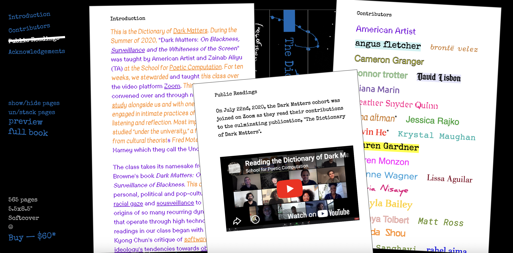

This website, while simple in nature and without masses of information, is an engaging and effective
way in which a book has been advertised and sold to consumers. The cover page immediately sets humourous and playful tone, and when one clicks the options on the left side bar, a paper sound
effect is played. The user can then drag and drop the page around and stack the new information each click, making the site a really immersive and engaging page. For a while I thought I might want
to do something with sound effects such as this, however I realised it didn’t really go with my page’s
final execution. It works here, however I didn’t want to add something that might seem too juvenile be too amusing.